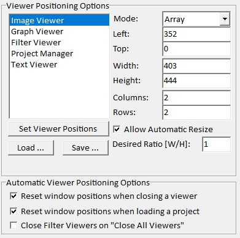

|
Viewer Positioning Options
|
您可以在 程序选项 > 查看器定位 中更改每个查看器类别的自动查看器定位方式。
要更改查看器定位，首先在列表框中选择一个查看器类别。然后更改右侧编辑框中的值以调整定位。

查看器定位选项
模式 (下拉框):
左/上 (整数编辑框):
第一个查看器的左上角位置。
宽度/高度 (整数编辑框):
每个查看器的宽度和高度；
在阵列模式下，查看器的最大区域为 <宽度 * 列数> x <高度 * 行数>。
列数/行数 (整数编辑框):
阵列模式的行数和列数。
允许自动调整大小 (复选框):
在阵列模式下，如果打开的窗口过多且没有更多位置（即查看器数量 > 列数 * 行数），窗口大小会自动缩小。
期望比例 (浮点编辑框):
如果开启"允许自动调整大小"，自动调整大小算法会尝试找到最适合期望比例的列数和行数。
设置查看器位置
如果用户移动了一个或多个查看器，重置所有查看器位置。
加载/保存
您可以在此保存或加载当前的查看器定位选项。
文件名很重要：软件会自动选择当前屏幕/显示器分辨率的文件名。
如果按"保存"，文件名会自动设置为当前分辨率将搜索的文件名。
Automatic 查看器定位选项
关闭某类查看器时重置窗口位置 (复选框):
如果勾选，当关闭某个类型的查看器时，该类型查看器的窗口位置将自动重置。
加载/追加项目时重置窗口位置 (复选框):
如果勾选，加载项目后所有已加载查看器的位置将被重置。
使用"关闭所有查看器"按钮时关闭滤波器查看器 (复选框):
如果勾选，在主窗口中使用"关闭所有查看器"功能时，所有滤波器查看器将被关闭。